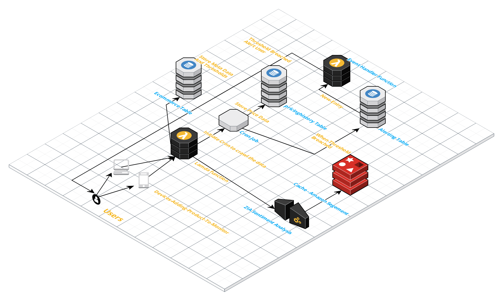
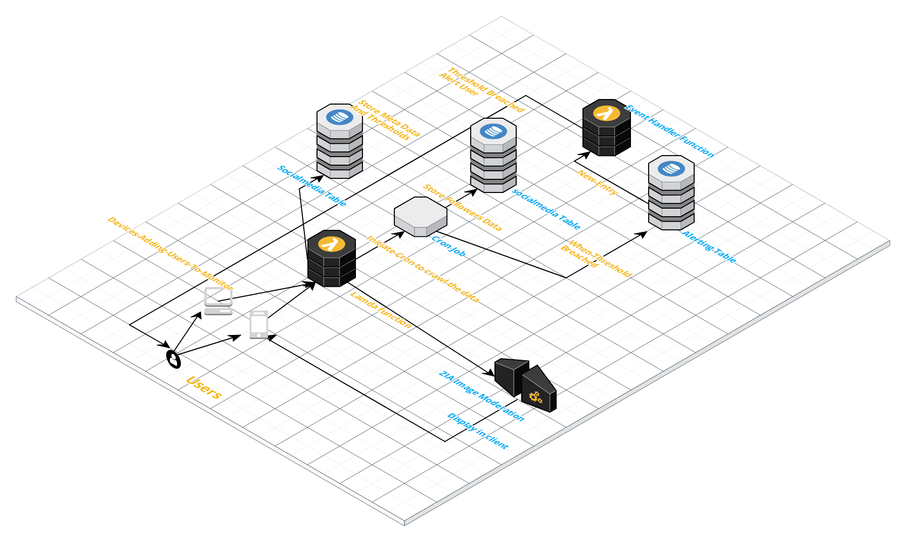
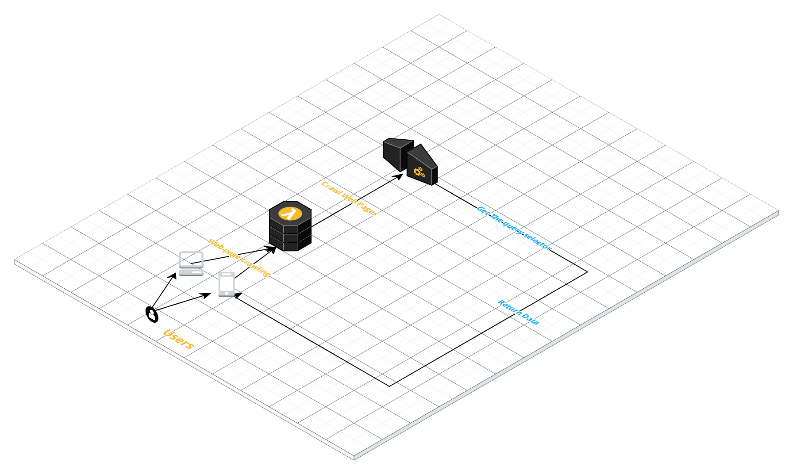
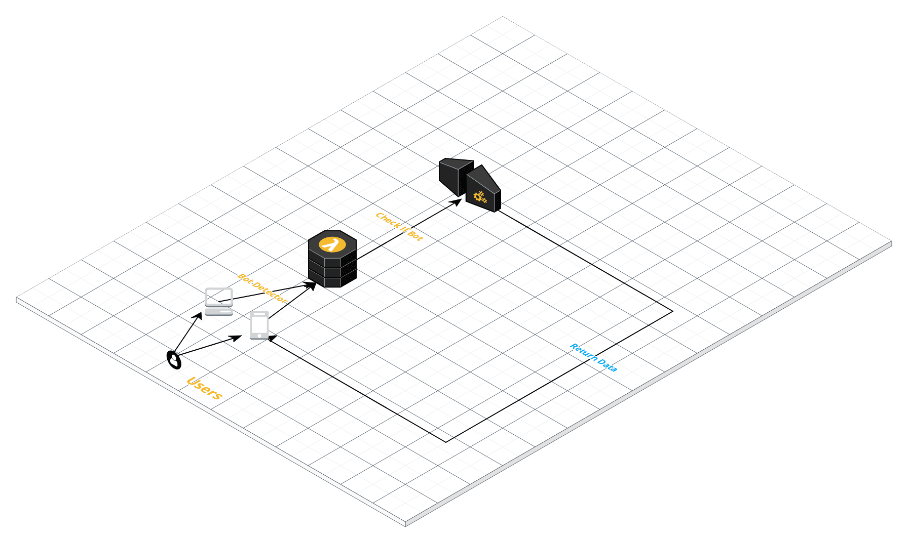

Ecommerce Spider
There 2 work flows where user ,
- Normal workflow of scrapping the data by keyword,limit,location etc
- Alerting and scheduling based on the data of product by their id
Normal workflow of scrapping the data by keyword,limit,location etc
When the user scrapes the product by entering the keyword we display the result on the client as well as perform text sentiment analysis on the keyword searched . If the keyword is not harsh and good . we store it in cache for a period of 6hrs so when someone requests same keyword . It is fetched from the cache instead of crawling that keyword againAlerting and scheduling based on the data of product by their id
User adds the product ID (ASIN number in case for amazon) Meta Data are stored in ecommerce table and a cron job is initiated which periodically crawls the product & scraps the pricing data. This data is stored in pricing_history table . When the price breaches the threshold configured the user we store it in alerts_table . when there is a new entry in alerts_table . A alert is triggered to the user using the event_handler function.

Social Media Spider
There 2 work flows where user ,
- Normal workflow of scrapping the instagram by hashtag or userids etc
- Alerting and scheduling based on the followers|post data of a account by their id
Normal workflow of scrapping the data by hashtag or userids
When the user scrapes the instagram by entering the keyword we display the result on the client as well as perform image moderation on the keyword searched . If the image is not harsh and good . It is fetched from the cache instead of crawling that keyword againAlerting and scheduling based on the data of a account by their id
User adds the username Meta Data are stored in socialmedia table and a cron job is initiated which periodically crawls the user & crawls the followers data. This data is stored in socialtrends_history table . When the price breaches the threshold configured the user we store it in alerts_table . when there is a new entry in alerts_table . A alert is triggered to the user using the event_handler function.

Web Spider
Simple spider which crawls the webpage and selects the queryElement to be scraped and returns the data.

Bot Detection Spider
Simple lamda which detects the input useragent and verifies if it is a bot or not.